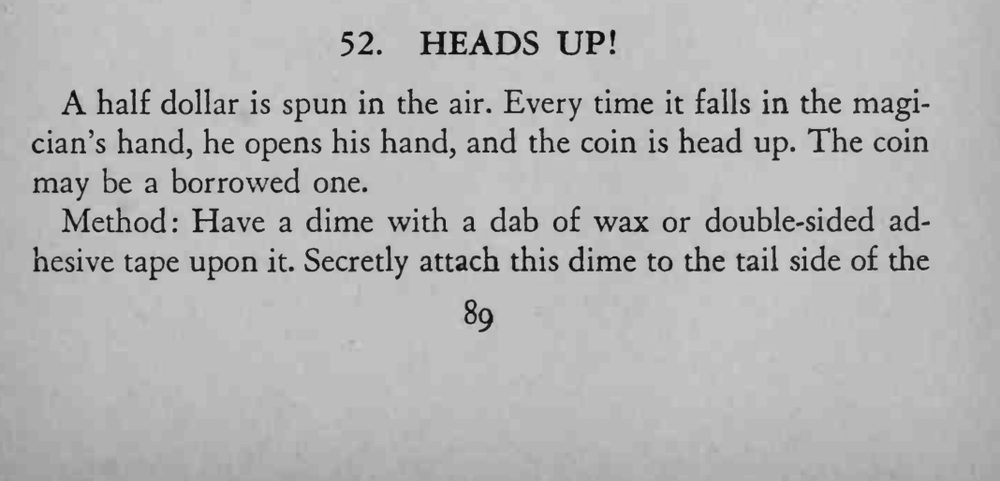
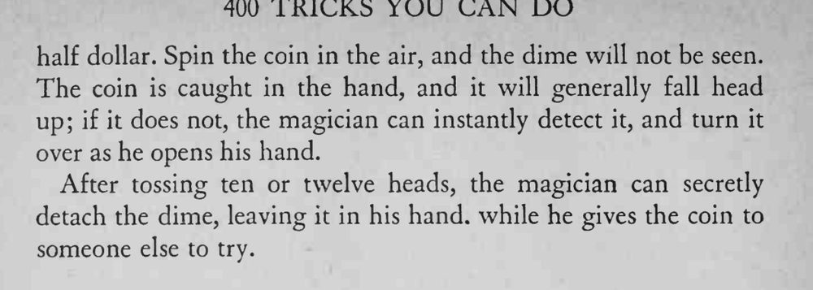

硬币被抛向空中，每次落回手中都是正面朝上，连抛十几次仍然如此。
暗币要粘在背面中央并贴牢，抛接时手指才感觉不出异样。


half dollar is spun in the air. Every time it falls in the magician's hand, he opens his hand, and the coin is head up. The coin may be a borrowed one. Method: Have a dime with a dab of wax or double-sided adhesive tape upon it. Secretly attach this dime to the tail side of the half dollar. Spin the coin in the air, and the dime will not be seen. The coin is caught in the hand, and it will generally fall head up; if it does not, the magician can instantly detect it, and turn it over as he opens his hand. After tossing ten or twelve heads, the magician can secretly detach the dime, leaving it in his hand, while he gives the coin to someone else to try.